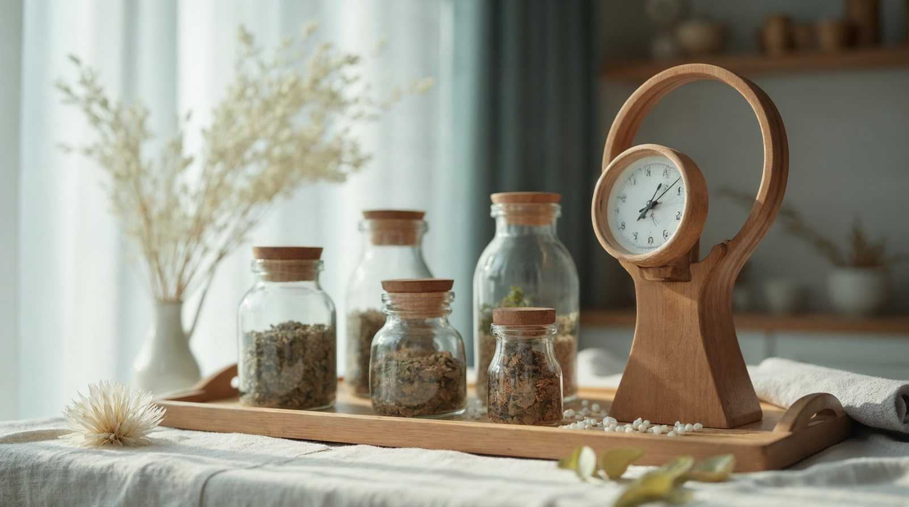

이종호 한의사 감수좋은꿈참사랑한의원 대표원장 (한의사 면허번호 19769)발행 2026-11-26 · 수정 2026-11-26
이 글의 차례
아침에 세수를 하려고 손바닥에 물을 받아 얼굴에 대는 순간, 볼 한쪽에 번개가 지나가는 것처럼 찌릿합니다. 놀라서 손을 떼면 몇 초 뒤 언제 그랬냐는 듯 조용해집니다. 그런데 칫솔이 잇몸에 닿을 때, 찬바람이 볼을 스칠 때 또 같은 자리가 번쩍입니다.
이렇게 얼굴 한쪽에 짧고 날카로운 통증이 반복된다면 삼차신경통을 먼저 떠올려 봅니다. 삼차신경통은 얼굴 감각을 맡은 삼차신경을 따라 몇 초에서 길게는 1~2분쯤 전기가 오듯, 칼로 찌르듯 아픈 통증이 되풀이되는 상태를 말합니다.
진단과 약 처방은 신경과에서 받으시고, 한의원에서는 그 곁에서 잠과 긴장, 식사와 몸의 리듬을 함께 살핍니다.
진료실에서 이 통증을 겪는 분들께 가장 자주 듣는 말이 있습니다. "치과에 몇 번을 갔는데 이는 멀쩡하대요." 어떤 분은 멀쩡한 이를 뽑을 뻔했다고도 하십니다. 그만큼 이 통증은 이와 잇몸 쪽으로 오해받기 쉽습니다.
통증 자체만큼 힘든 것이 '언제 또 올까' 하는 마음입니다. 밥을 씹는 것도, 말하는 것도, 웃는 것도 조심스러워집니다. 얼굴을 씻지 못하고 면도를 미루고, 바람 부는 날은 마스크와 목도리로 얼굴을 꽁꽁 싸매게 됩니다. 그동안 얼마나 마음을 졸이셨을까 싶습니다.
왜 얼굴에 전기가 오는 것처럼 아플까요
삼차신경은 이름처럼 세 갈래로 나뉩니다. 첫째 가지는 이마와 눈 주변, 둘째 가지는 광대와 윗입술·윗니, 셋째 가지는 아래턱과 아랫입술·아랫니 쪽 감각을 맡습니다. 삼차신경통은 이 가운데 둘째와 셋째 가지 쪽에 많이 나타난다고 알려져 있습니다.
원인으로 가장 많이 이야기되는 것은 뇌 안에서 신경이 나오는 자리 가까이를 혈관이 누르는 경우입니다. 혈관이 박동할 때마다 신경을 감싼 막이 조금씩 닳으면, 신경이 작은 자극에도 지나치게 크게 반응하게 됩니다. 살짝 스친 감각이 전기처럼 증폭되어 느껴지는 셈이지요.
그래서 이 통증에는 '방아쇠'가 있습니다. 코 옆이나 입가, 잇몸처럼 특정한 자리를 건드리면 통증이 튀어 오릅니다. 세게 누르는 것보다 가볍게 스치는 자극에 더 민감한 경우도 많습니다.
나이가 들수록 혈관이 구불구불해지는 경향이 있어 중년 이후에 더 흔하다고 알려져 있습니다. 드물게는 다른 원인이 숨어 있기도 해서, 처음 이런 통증이 생겼다면 신경과에서 영상 검사를 포함해 원인을 살펴보는 경우가 많습니다.
한의학에서는 얼굴 통증을 면통(面痛)이라 부르며 오래전부터 살펴 왔습니다. 찬바람에 심해지는지, 열감이 있는지, 지치고 잠이 모자랄 때 잦아지는지를 함께 보며 몸 전체의 흐름을 읽으려 합니다.
치통, 턱관절, 축농증과는 어떻게 다를까요
얼굴이 아프다고 모두 삼차신경통은 아닙니다. 비슷해 보이는 통증을 나눠 보면 이렇습니다.
치통과 잇몸 문제
충치나 잇몸 염증은 대개 욱신욱신 오래 이어지고, 차갑거나 뜨거운 것에 이가 시리며, 아픈 이를 두드리면 통증이 납니다. 삼차신경통은 몇 초씩 번쩍이고 사이사이는 비교적 조용하다는 점이 다릅니다. 둘이 겹칠 수도 있어 치과 확인은 함께 받아 두시는 것이 좋습니다.
턱관절 장애
턱관절 쪽 통증은 귀 바로 앞이 뻐근하고, 입을 벌리거나 씹을 때 소리가 나거나 걸리는 느낌이 동반되는 경우가 많습니다. 통증이 둔하고 오래간다는 점에서 삼차신경통의 짧고 날카로운 통증과 구분됩니다.
축농증과 코 주변 압통
축농증은 광대나 이마가 묵직하게 눌리고, 코막힘과 누런 콧물, 고개를 숙일 때 심해지는 압박감이 함께 옵니다. 전기가 오듯 순간적으로 찌르는 통증과는 결이 다릅니다.
대상포진 뒤 신경통
얼굴에 물집이 났던 자리가 계속 화끈거리고 옷이나 머리카락이 스치기만 해도 아프다면 대상포진 뒤 신경통일 수 있습니다. 물집이 있었는지가 중요한 단서가 되므로 꼭 말씀해 주세요.
군발두통
한쪽 눈 주변이 15분에서 세 시간가량 깊게 찌르듯 아프고, 같은 쪽 눈물과 콧물, 눈 충혈이 함께 온다면 군발두통 쪽을 살핍니다. 몇 초씩 끊어지는 삼차신경통과는 통증이 이어지는 시간이 다릅니다.
예를 들면 이런 경우입니다
실제 어느 분의 사연이 아니라, 진료실에서 자주 듣는 모습을 바탕으로 그려 본 장면입니다.
예를 들어 식사 중에 한쪽 어금니 쪽이 번쩍 아파 젓가락을 내려놓고, 그 뒤로 반대쪽으로만 씹다 보니 턱과 목까지 뻐근해진 분이 계실 수 있습니다. 이럴 때는 통증 자체와 함께 한쪽으로만 씹는 습관이 만든 근육 긴장도 같이 봅니다.
겨울이 되면 출근길 찬바람에 볼이 찌릿해 목도리로 얼굴 절반을 가리고 다니는 분도 있습니다. 바람과 추위가 방아쇠가 되는지, 따뜻한 실내에서는 어떤지를 나눠 적어 보시라고 말씀드립니다.
약을 드시면서 통증은 조금 잦아들었지만 낮에 졸리고 어지러워 일하기가 힘들다는 분도 계십니다. 이런 이야기는 처방한 신경과 선생님께 꼭 전하시도록 권합니다. 약의 양과 종류를 조절하는 일은 그쪽의 몫입니다.
말을 많이 해야 하는 일을 하는 분은 통화나 회의가 길어지는 날 통증이 잦아진다고 하십니다. 이럴 때는 말하는 시간 사이사이에 턱의 힘을 빼고 쉬는 틈을 일정에 함께 넣어 봅니다.
통증이 잠잠한 시기와 잦아지는 시기
삼차신경통은 몇 주, 몇 달씩 잠잠하다가 어느 날 다시 잦아지는 흐름을 보이기도 합니다. 통증이 사라졌다고 다 끝났다고 여기기보다, 어떤 때 다시 고개를 드는지 알아 두는 것이 도움이 됩니다.
진료실에서 들어 보면 잠이 모자란 주간, 일이 몰려 이를 악물고 지낸 때, 찬바람이 갑자기 불기 시작한 계절에 다시 시작되었다는 말씀이 많습니다. 꼭 그렇다고 말할 수는 없지만, 내 몸의 흐름을 아는 단서로 삼을 만합니다.
잠잠한 시기에는 통증을 잊고 싶은 마음이 큽니다. 그래도 그때 지난 기록을 한 번 정리해 두시면, 다음에 통증이 고개를 들 때 덜 당황하게 됩니다. 무엇이 방아쇠였는지 미리 알고 있으면 피할 길도 하나 더 보입니다.
가족이 함께 알아 두면 좋은 것
곁에서 보는 가족은 "그 정도로 아파?" 하고 갸웃하기 쉽습니다. 몇 초 만에 지나가니 겉으로는 멀쩡해 보이기 때문입니다. 하지만 그 몇 초가 하루에도 여러 번 찾아오면, 식탁에 앉는 일조차 긴장의 연속이 됩니다.
식사 때 대화를 재촉하지 않기, 씹기 편한 반찬을 한두 가지 따로 두기, 찬바람 드는 창 옆 자리를 피해 앉게 해 주기. 이런 작은 배려가 생각보다 큰 힘이 됩니다. 아파하는 모습을 탓하지 않고 기다려 주는 것만으로도 마음이 한결 놓인다고 말씀하시는 분이 많습니다.
통증이 마음에 남기는 것
삼차신경통을 오래 겪은 분들은 통증보다 기다림이 더 힘들다고 하십니다. 지금은 괜찮아도 언제 번쩍일지 모르니, 얼굴 근육이 늘 긴장한 채로 하루를 보냅니다. 그렇게 굳은 얼굴과 어깨가 다시 피로를 쌓고, 피로는 또 통증이 잦아지는 바탕이 되기도 합니다.
그래서 저는 통증이 없는 시간에 몸의 긴장을 내려놓는 연습을 함께 권합니다. 잠들기 전 어깨를 천천히 내리고, 숨을 길게 내쉬며 턱의 힘을 빼는 것만으로도 하루의 끝이 조금 달라질 수 있습니다.
먼저 이렇게 여쭙니다
처음 오시면 저는 대략 이런 순서로 여쭙습니다. 기억나는 것부터 말씀해 주셔도 괜찮습니다.
- 통증은 얼굴의 어느 쪽, 어느 자리에서 시작해 어디로 번지나요?
- 한 번 오면 몇 초, 몇 분 정도 이어지나요? 하루에 몇 번쯤인가요?
- 세수, 양치, 씹기, 말하기, 찬바람 가운데 무엇이 통증을 부르나요?
- 얼굴이 저리거나 감각이 둔한 곳이 있나요?
- 그 자리에 물집이 났던 적이 있나요? 치과 치료를 최근에 받으셨나요?
- 신경과 진료와 영상 검사를 받으셨나요? 지금 드시는 약은 무엇인가요?
통증만 여쭙지 않고 그 통증이 하루를 어떻게 바꿔 놓았는지도 함께 여쭙습니다. 끼니를 거르게 되었는지, 잠을 설치는지, 사람 만나는 일을 피하게 되었는지가 다음에 무엇부터 챙길지를 정해 줍니다.
일상에서 먼저 해 볼 수 있는 것
방아쇠를 완전히 피할 수는 없지만, 덜 건드리는 요령은 있습니다. 아래에서 지금 할 수 있는 것 하나부터 골라 보세요.
- 세수는 미지근한 물로, 수건은 문지르지 말고 가볍게 눌러 닦기
- 칫솔은 부드러운 모로 바꾸고, 아픈 쪽은 천천히 작게 움직이기
- 찬바람 부는 날은 마스크나 목도리로 볼을 덮고 외출하기
- 질기거나 딱딱한 음식은 잘게 썰어 천천히, 양쪽으로 나누어 씹기
- 통증이 온 시각과 상황을 한 줄씩 적어 두기
- 잠자리에 드는 시각을 일정하게 맞추기
아프지 않은 쪽으로만 씹다 보면 반대편 턱과 목이 굳기 쉽습니다. 통증이 덜한 시간에는 턱에 힘을 빼고 입술은 가볍게 다문 채 위아래 이가 닿지 않게 두는 연습을 해 보세요.
식사가 무서워 끼니를 거르는 분도 많습니다. 씹기 쉬운 죽이나 부드러운 반찬으로라도 끼니를 이어 가시길 권합니다. 몸이 지치면 통증에 대한 마음의 여유도 함께 줄어듭니다.
양치가 무서워 입안 관리를 미루면 잇몸이 상하기 쉽습니다. 통증이 덜한 시간대를 골라 양치하고, 그마저 어려운 날은 미지근한 물로 입을 헹구는 것부터 해 보세요.
겨울철에는 실내외 온도 차가 커서 현관문을 나서는 순간이 방아쇠가 되기 쉽습니다. 나가기 전에 목도리를 미리 두르고, 건물 안에 들어와서는 잠시 숨을 고른 뒤 벗어 보세요.

한의원에서 함께 살필 수 있는 경우
- 신경과 진료를 받고 있으면서 잠과 긴장, 식사 리듬을 함께 살피고 싶은 경우
- 통증이 무서워 한쪽으로만 씹다 보니 턱과 목, 어깨가 함께 굳은 경우
- 찬바람이나 피로에 통증이 잦아지는 흐름을 정리해 보고 싶은 경우
- 통증 때문에 잠을 설치고 마음이 많이 지친 경우
좋은꿈참사랑한의원에 처음 오시면 신경과 진료 여부와 드시는 약을 먼저 확인합니다. 그다음 양손을 올려 달라고 말씀드리고 맥을 짚으며 잠과 소화, 체온, 대소변을 여쭙습니다.
침을 상의할 때는 통증이 오는 방아쇠 자리를 직접 건드리지 않도록 조심합니다. 얼굴보다 손발, 목과 어깨처럼 멀리 떨어진 자리를 먼저 쓰거나, 굳은 턱과 목 주변 근육을 함께 살피는 식으로 진찰한 뒤에 정합니다.
한약은 진찰 뒤 필요하다고 판단될 때 상의합니다. 신경과 약을 드시고 있다면 그 이름을 모두 알려 주세요. 함께 드셔도 되는지 신중하게 확인하고 정합니다. 처방받은 약은 처방한 의사와 상의 없이 줄이거나 끊지 않습니다.
다시 오시면 지난번 이후 통증이 온 횟수와 방아쇠가 무엇이었는지, 잠은 어땠는지부터 이어서 여쭙습니다. 한 번의 진료보다 그 사이의 기록이 다음 길을 정하는 데 더 많은 것을 알려 줍니다.
이렇게 기록해 오시면 상담이 쉬워집니다
통증이 짧고 갑작스러워 막상 진료실에서는 설명하기 어려운 분이 많습니다. 2주만 적어 보세요.
- 통증이 온 날짜와 시각, 이어진 시간(몇 초, 몇 분)
- 그때 하던 일(세수, 양치, 식사, 말하기, 바람, 아무것도 안 할 때)
- 아픈 자리를 손가락으로 짚은 위치(얼굴 그림에 표시해도 좋습니다)
- 그날 잠든 시각과 깬 시각, 피곤하거나 긴장했던 일
- 드신 약과 시각, 약을 먹은 뒤 졸림이나 어지럼이 있었는지
휴대폰 메모에 짧게 적어도 충분합니다. 빠진 날이 있어도 괜찮습니다. 기억나는 줄부터 같이 펼쳐 보겠습니다.
이런 증상은 먼저 확인이 필요합니다
- 얼굴 통증과 함께 감각이 둔해지거나 저린 곳이 생긴 경우
- 얼굴 한쪽이 처지면서 말이 어눌해지거나 한쪽 팔다리에 힘이 빠지는 경우
이런 신호가 있으면 한의원보다 가까운 병원이나 응급실을 먼저 찾으세요.
전기가 오는 듯한 통증은 겪어 보지 않은 사람에게 설명하기가 참 어렵습니다. 그래서 더 외로우셨을 겁니다. 서두르지 않고, 무엇이 통증을 부르는지부터 함께 정리해 보겠습니다. 다음에 오시면 지난 2주 동안 통증이 언제, 무엇을 할 때 왔는지부터 여쭙겠습니다.
함께 읽으면 좋은 글
- 얼굴 한쪽이 저리거나 감각이 둔한 느낌이 있을 때는 무엇부터 확인하나요?
- 얼굴 근육이 파르르 떨릴 때는 어떤 점을 먼저 확인하나요?
- 입을 벌릴 때 턱에서 소리가 나고 불편하면 어떻게 살피나요?
- 스트레스를 받으면 뒷목이 당기고 머리가 아픈 긴장성 두통은 어떻게 살피나요?

여쭙는 것
- 통증은 얼굴의 어느 쪽, 어느 자리에서 시작해 어디로 번지나요?
- 한 번 오면 몇 초, 몇 분 정도 이어지나요? 하루에 몇 번쯤인가요?
- 세수, 양치, 씹기, 말하기, 찬바람 가운데 무엇이 통증을 부르나요?
생활에서 해 볼 것
- 세수는 미지근한 물로, 수건은 문지르지 말고 가볍게 눌러 닦기
- 칫솔은 부드러운 모로 바꾸고, 아픈 쪽은 천천히 작게 움직이기
- 찬바람 부는 날은 마스크나 목도리로 볼을 덮고 외출하기
한의원에서 함께 살필 것
- 신경과 진료를 받고 있으면서 잠과 긴장, 식사 리듬을 함께 살피고 싶은 경우
- 통증이 무서워 한쪽으로만 씹다 보니 턱과 목, 어깨가 함께 굳은 경우
- 찬바람이나 피로에 통증이 잦아지는 흐름을 정리해 보고 싶은 경우
먼저 확인이 필요한 신호
- 얼굴 통증과 함께 감각이 둔해지거나 저린 곳이 생긴 경우
- 얼굴 한쪽이 처지면서 말이 어눌해지거나 한쪽 팔다리에 힘이 빠지는 경우
한눈에 보는 표
| 구분 | 핵심 |
|---|---|
| 여쭙는 것 | 통증은 얼굴의 어느 쪽, 어느 자리에서 시작해 어디로 번지나요? 한 번 오면 몇 초, 몇 분 정도 이어지나요? 하루에 몇 번쯤인가요? |
| 생활에서 해 볼 것 | 세수는 미지근한 물로, 수건은 문지르지 말고 가볍게 눌러 닦기 칫솔은 부드러운 모로 바꾸고, 아픈 쪽은 천천히 작게 움직이기 |
| 한의원에서 함께 살필 것 | 신경과 진료를 받고 있으면서 잠과 긴장, 식사 리듬을 함께 살피고 싶은 경우 통증이 무서워 한쪽으로만 씹다 보니 턱과 목, 어깨가 함께 굳은 경우 |
| 먼저 확인이 필요한 신호 | 얼굴 통증과 함께 감각이 둔해지거나 저린 곳이 생긴 경우 얼굴 한쪽이 처지면서 말이 어눌해지거나 한쪽 팔다리에 힘이 빠지는 경우 |
자주 묻는 질문
삼차신경통은 이가 아픈 것과 어떻게 구분하나요?
치통은 대개 욱신거림이 오래 이어지고 차갑거나 뜨거운 것에 시립니다. 삼차신경통은 몇 초씩 전기가 오듯 찌르고, 세수나 양치처럼 가벼운 자극에 튀어 오르는 경우가 많습니다. 둘이 겹칠 수도 있어 치과와 신경과 진료를 함께 받아 두시길 권합니다.
신경과 약을 먹고 있는데 침을 맞아도 되나요?
드시는 약을 모두 알려 주시면 확인한 뒤 진찰을 거쳐 정합니다. 침을 쓸 때는 통증을 부르는 얼굴 자리를 직접 건드리지 않도록 조심합니다. 신경과 약은 처방한 의사와 상의 없이 줄이거나 끊지 않습니다.
찬바람을 맞으면 왜 더 아픈가요?
찬바람이 피부를 스치는 자극이 예민해진 신경에 방아쇠가 될 수 있습니다. 외출할 때 마스크나 목도리로 볼을 덮어 두는 것이 도움이 될 수 있습니다.
통증이 없는 날도 진료를 받으러 가도 되나요?
통증이 없는 날이 오히려 차분하게 이야기를 나누기 좋습니다. 기록해 둔 메모를 가지고 오시면 그동안의 흐름을 같이 살펴보겠습니다.
좋은꿈참사랑한의원은 재진 때 지난번 이야기부터 이어서 여쭙니다. 진료시간과 예약은 오시는 길에서 확인하세요.
어디서 상담받을 수 있나요?
좋은꿈참사랑한의원은 서울 동작구 만양로2길 2 신성빌딩 3층·5층(서울 동작구 상도동, 7호선 상도역 3번 출구 근처)에 있습니다. 한의사 3명(이종호 대표원장, 조영기 수석진료원장, 정원영 진료원장)이 진료합니다. 진료시간은 평일 09:30~20:00(점심 13:00~14:00), 토·일·공휴일 09:30~15:00이며, 방문 전 전화로 확인을 권합니다. 예약은 네이버 예약, 카카오톡 상담, 전화 02-815-7510로 받습니다.
이 글은 일반적인 건강 정보이며 개인의 진단이나 치료를 대신하지 않습니다. 증상이 있거나 복용 중인 약이 있다면 진료를 통해 확인하세요. 치료 효과는 개인마다 다를 수 있습니다.
작성 기준: 일반적으로 알려져 있는 건강 정보를 참고해 정리했습니다(대표원장 감수). 증상 기록은 1~2주 동안 하루 1회, 비슷한 시간에 적어 오시면 지난 상태와 비교하기 쉽습니다.